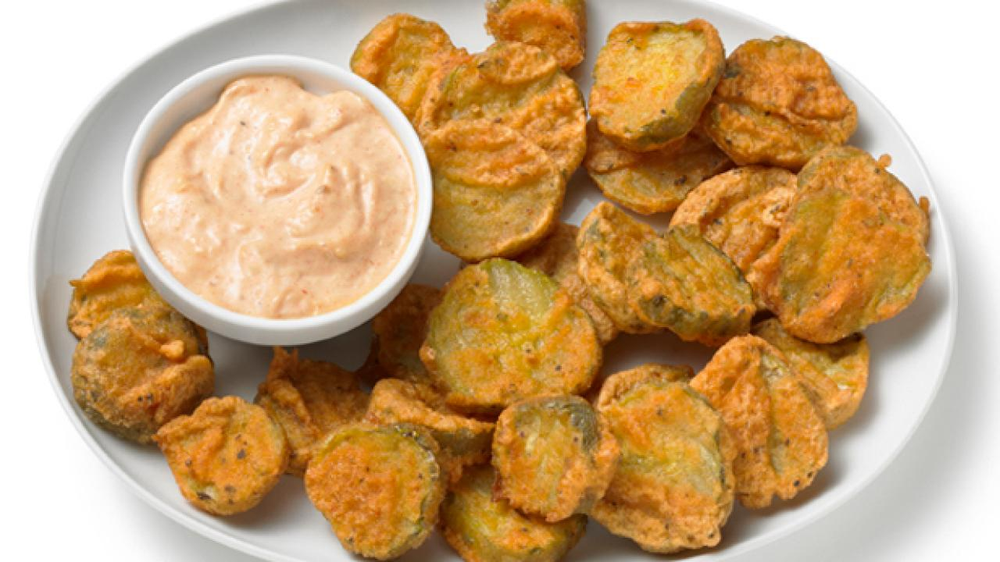

Description
For a tasty side dish, try Food Network Kitchen's Almost-Famous Fried Pickles, spiced with cayenne and Cajun seasoning and served with a horseradish sauce.
Ingreendients:
- 1/2 Cup All-Purpose Flour
- 1 3/4 Teaspoons Italian Seasoning
- 1/2 Teaspoon Italian Seasoning
- 1/4 Teaspoon Ceyanne Pepper
- Kosher Salt
- 2 Cups Sliced Dill Pickles
- Ranch for dipping
Steps:
- Make the sauce: Mix the mayonnaise, horseradish, ketchup and Cajun seasoning in a bowl; set aside.
- Fry the pickles: Heat 1 inch peanut oil in a pot over medium-high heat until a deep-fry thermometer registers 375 degrees F. Meanwhile, whisk the flour, Cajun seasoning, Italian seasoning, cayenne pepper, 1/2 teaspoon salt and 1/2 cup water in a large bowl until smooth. Spread the pickles on paper towels and pat dry.
- Add half of the pickles to the batter and toss to coat. Remove from the batter using a slotted spoon, letting the excess drip off, and add to the oil one at a time. Fry until golden brown, 1 to 2 minutes; remove with a slotted spoon and drain on paper towels. Return the oil to 375 degrees F and repeat with the remaining pickles and batter. Serve immediately with the prepared sauce.